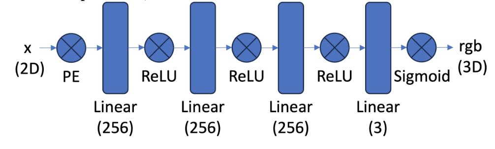
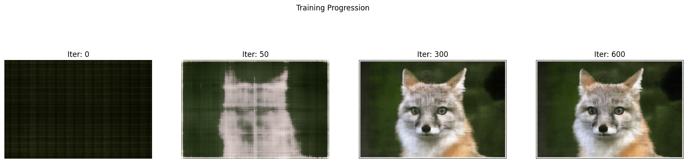
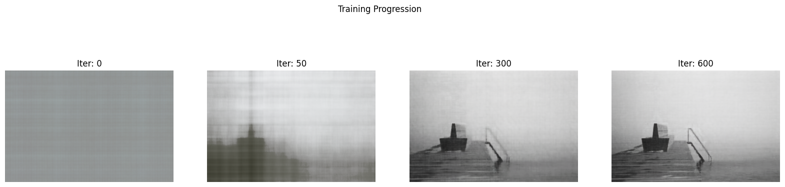
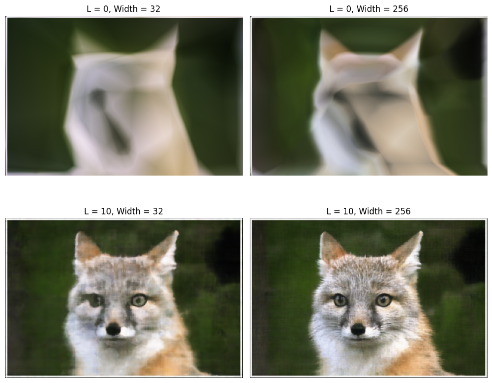
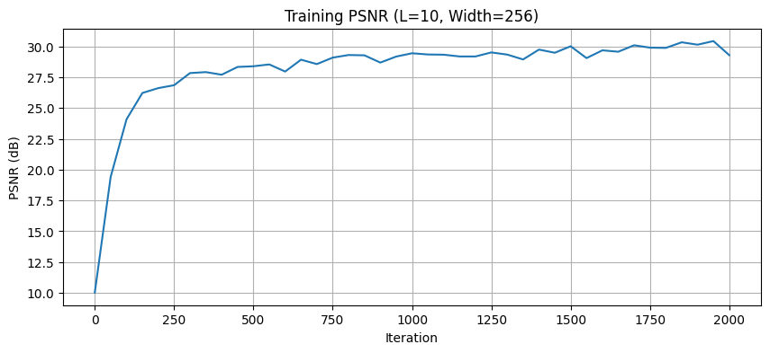
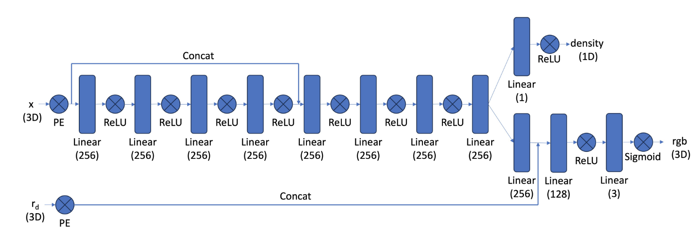
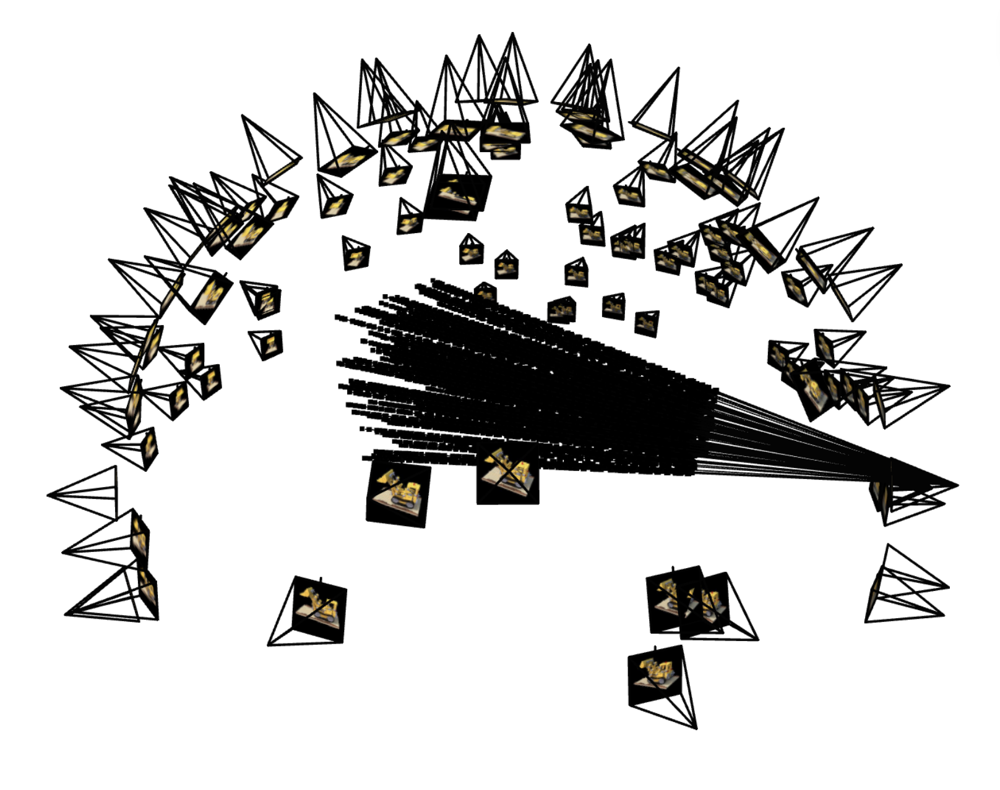
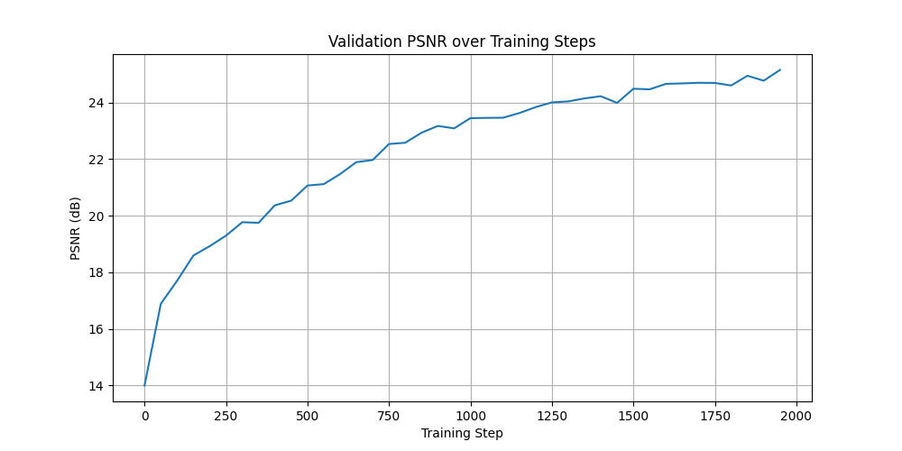

Description
In project 4, I implemented a Neural Radiance Field (NeRF) to synthesize novel views of 3D scenes from a sparse set of input images. This involved camera calibration, 2D image reconstruction using a neural field, and finally building a full NeRF model from our own dataset.
Part 0: Camera Calibration and 3D Scanning
Camera Frustums Visualization
The camera calibration process involved capturing multiple images of ArUco tags from different angles and distances. These images were used to compute the camera intrinsics and distortion coefficients using OpenCV's calibration functions. The visualization of camera frustums in Viser helped verify the accuracy of the calibration process. Below are example images and screenshots of the camera frustums in Viser:
Part 1: Neural Field for 2D Image
Model Architecture
My 2D MLP architecture consists of 8 fully-connected layers, each with a width of 256 neurons, per the project specification. I used ReLU activation functions for all hidden layers and a final Sigmoid activation to output color values in the [0, 1] range. The input 2D coordinates were first passed through a sinusoidal positional encoding with a max frequency of 10. The network was trained with an Adam optimizer and a learning rate of 1e-4.
I also experimented with variations in L and layer width as part of the hyperparameter grid search described below.

Training Images
Training Progression
The model was trained by sampling random pixels at each iteration. The progression images below demonstrate this process for both the provided Fox image and my own image (taken at Louisiana Museum outside of Copenhagen). The model begins with a blurry output and quickly learns the low-frequency structures. As training continues the network learns high-frequency details, sharpening the image until it converges to a clear reconstruction.


Hyperparameter Variations
This visual demonstrates the impact of changing positional encoding frequency and MLP width. With L=0, the model fails to capture high-frequency details, resulting in a blurry reconstruction. Increasing L to 10 significantly improves detail recovery. Increasing the MLP width from 32 to 256 also enhances the model's capacity to learn more details, leading to better overall image quality.

PSNR Curve
The PSNR curve below tracks the reconstruction quality over training for the Fox image. The plot shows a rapid increase in PSNR at first, likely corresponding to the model learning the image's main structures. The curve then gradually flattens as the network converges, making finer adjustments to high-frequency details.

Part 2: Neural Radiance Field for 3D Scene
Implementation Description
My implementation followed the project guide. I created a pixel_to_ray function that takes the camera intrinsics (K) and a camera-to-world (c2w) matrix to compute ray origins and directions for a grid of pixels. I implemented sample_along_rays to generate n_samples (which was 64 for this part per the project spec) 3D points along each ray between near and far bounds. I also added perturbation in these samples during training to sample across the entire ray.
The model is an MLP similar to Part 1, but it takes 3D coordinates $x$ (L=10) and view directions $r_d$ (L=4) as input. The density ($\sigma$) is output from an early layer, while the RGB color is output at the end, conditioned on the view direction. I implemented the volrend function, which computes the discrete approximation of the volume rendering equation. It calculates $\alpha$ values from $\sigma$ and step size, then computes the transmittance ($T_i$) and weights ($w_i = T_i \cdot \alpha_i$) to output the final pixel color.

Rays and Samples
Rays were sampled from the images using the camera intrinsics and extrinsics. My dataloader implementation randomly selects a single camera and samples a batch of $N = batch size$ rays from that single image. The visualization below shows 100 rays and their 3D sample points from a single training step, all fanning out from one camera frustum.

PSNR Curve (Lego)
The plot below shows the validation PSNR (Peak Signal-to-Noise Ratio) for the Lego scene, measured every 50 steps. The model converges to a high PSNR, indicating good reconstruction quality. This model was trained for 2,000 steps with a batch size of 10,000 rays, a learning rate of 5e-4, and near and far bounds of 2.0 and 6.0 (representing the distances to the object in the sample images)

Spherical Rendering
The trained NeRF model was used to render novel views of the Lego scene. The spherical rendering video below demonstrates the model's ability to synthesize realistic views from arbitrary camera angles:
Iteration Renders
Below are intermediate renders from a fixed validation viewpoint, showing the model's progress on the Lego scene as training progresses.
Part 2.6: Training with Your Own Data
Hyperparameter Discussion
Training on my own data required hyperparameter adjustments of $near$ and $far$ bounds. For the Lego scene, they were 2.0 and 6.0. For my custom object, which was much closer to the camera, I found bounds of $near = 0.1, far = 0.35$ worked well. I also increased the number of training steps to 10,000 to allow the model to capture finer details, though the loss plot shows it converged quickly. I kept the batch size at 10,000 and the learning rate at 5e-4, as these worked well for the Lego scene.
GIF of Novel Views
The dataset captured in Part 0 was used to train a NeRF model for a Grogu toy. The GIF below shows novel views of the object rendered by the trained model. With more images, the quality of the render could be further improved.
Training PSNR & Loss
The plots below show the training loss (MSE) and validation PSNR for my custom scene. The loss drops quickly and the PSNR reached relatively good levels, indicating a successful training run. The curves begin to flatten around 5,000 steps, showing the model has converged.
Intermediate Renders
Below are intermediate renders generated at various steps of the training process to illustrate model progression: